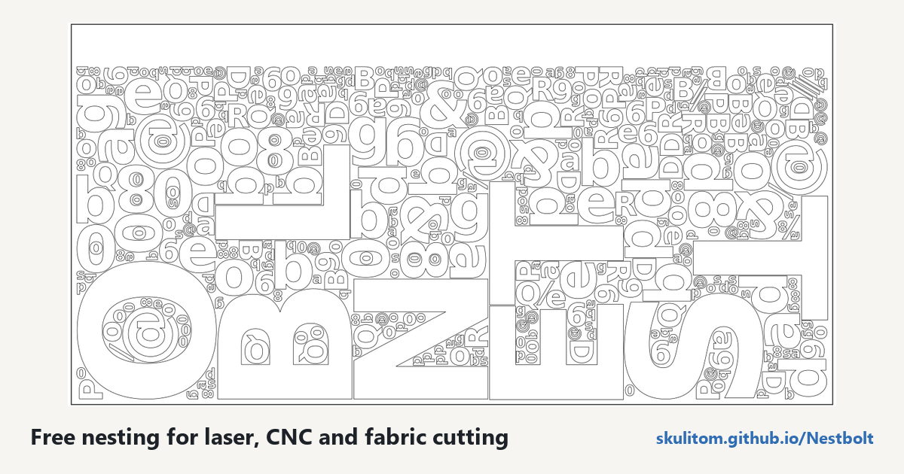

Free nesting software for laser cutting and CNC
Nesting means arranging the parts of a drawing on your material before cutting. By fitting outlines closer together, including small parts inside larger parts' holes, you can use less material. Nestbolt also compresses the last sheet towards one end so the remaining offcut stays usable.
Free, MIT-licensed, no account; your files never leave your computer.
Nestbolt is free, open-source software for fixed-sheet work: laser cutters, CNC routers, plasma, waterjet, fabric and leather. You can start with your own SVG or DXF, or try a bundled drawing to learn the settings before preparing your job.
From a drawing to a sheet layout
The importer treats each closed outline as a part and outlines inside it as holes. You can choose cutting layers, identify stock outlines, and review repairs or unsupported geometry before nesting. That review matters: the arrangement depends on the parts and stock you actually give it.
- Set sheet margins, spacing between parts and spacing at the edge.
- Use several sheets or several stock sizes with limits, including defects and remnant outlines.
- Allow free rotation, stepped angles or a list of angles; mirroring is also available.
- Let smaller parts occupy holes in larger ones while preserving the requested spacing.
Each result is checked by an independent Clipper2 validator for overlap, spacing, containment, rotations and quantities. Invalid layouts are never returned. Export produces an SVG and a DXF for each sheet, transformed from the original curves rather than re-polygonised.
How to nest a job in your browser
- Open the app. Drop in an SVG or DXF, or choose one of the five bundled examples.
- Review the import. Check the outlines, holes and import messages, then set the quantities you need.
- Describe your stock. Set the sheet size in millimetres, margins, part spacing and edge spacing.
- Choose permitted rotations. For a grain constraint, a list such as 0° and 180° keeps the available orientations explicit.
- Run the nest. Review the live best layout as the search runs. Each sheet shows a box around its parts and the clear offcut above them.
- Export each sheet. Take its SVG or DXF into your cutting workflow and review the output there.

What it costs and what you need
Nestbolt is MIT licensed, with no account required. The browser app needs no installation and your files never leave your computer. The hosted app runs the current preview build from main, newer than v0.2.0-alpha.1; stable v0.1.0 remains a download.
For a native workflow, downloadable command-line tools are available for Windows x64, Linux x64 and macOS Apple silicon. There is also an MCP server for AI agents, with tools to import, nest, validate, export and estimate sheets. See the agent interface for setup.
How good are the layouts?
In the frozen 75cbb32 benchmark of 2026-10-13, Nestbolt used 8.5% less material at the median than the best of Deepnest, SVGnest and Sparrow at equal 60-second budgets, and 9.6% at 300 seconds on the long subset. Sparrow still wins 8 of the 56 jobs at 60 seconds. These are frozen-build results, not a new comparison for the hosted preview. Read the comparison and its limitations or inspect every benchmark number.
Limits to review before cutting
LightBurn project nesting, lead-in allowances and newer large-drawing improvements are preview features, available from v0.2.0-alpha.1 onward. Preview lead allowances reserve space and report shortened leads or unresolved contours. Red LEADIN paths are review guides; your cutting program creates the actual leads.
Common-line cutting is optional and still under development. It can reduce cutting distance while increasing material use; two development jobs exceed the planned material limit. Its export needs CAM preparation to avoid cutting shared sections twice. Nestbolt gives no machine-safety or fit certification.
Frequently asked questions
Is it really free?
Yes. Nestbolt is free and open source under the MIT licence.
Are my files uploaded?
No. The browser runs the engine on your computer. Files never leave it; projects can be saved in the browser or as a ZIP.
Which file formats can I use?
Import SVG or DXF and export one SVG and DXF per sheet. The browser guide explains geometry and import review.
Can small parts go inside holes?
Yes. Outlines inside a part are its holes, and smaller parts can be nested in those spaces.
Does it work with LightBurn?
Preview support nests .lbrn2 and legacy .lbrn projects and exports editable .lbrn2 per sheet. Older text may need a native save to embed outlines, and mixed active/fixed groups need regrouping. See project preparation. You can also use the SVG/DXF export workflow.
Can I use it offline?
Download the native tools from releases for a local command-line workflow.